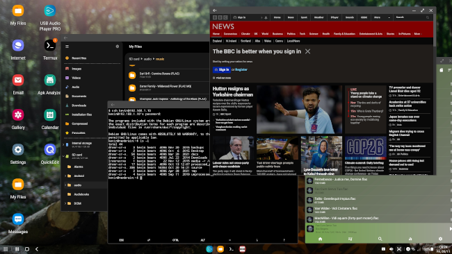

Samsung DeX -- the good, the bad, and the ugly
 DeX is a proprietary technology from Samsung, that provides a
full desktop environment with multi-window support,
for certain cellphones and
tablets. Although DeX has been around for a few years, it doesn't
seem to have raised significant interest. This is a shame because,
as well as being a very clever technology, it's genuinely
useful. Whether it can replace a full desktop, or even laptop,
computer is debatable; but it's perfectly satisfactory for routine
IT operations -- email, web browsing, media, documents, and so on.
DeX is a proprietary technology from Samsung, that provides a
full desktop environment with multi-window support,
for certain cellphones and
tablets. Although DeX has been around for a few years, it doesn't
seem to have raised significant interest. This is a shame because,
as well as being a very clever technology, it's genuinely
useful. Whether it can replace a full desktop, or even laptop,
computer is debatable; but it's perfectly satisfactory for routine
IT operations -- email, web browsing, media, documents, and so on.
As a minimum, DeX requires an external monitor to run on a cellphone. A keyboard and mouse (wired or wireless) are also almost essential. Recent Samsung devices support fully wireless screen sharing, but I can't comment on this, because it only works with a relatively small range of display devices. I suspect that most people who use DeX use it as I do -- with an HDMI cable and, perhaps, a desktop dock.
Samsung sells a couple of different docks, both of which are comparatively expensive (UK £50-100). However, docks provide charging and port expansion, all in one unit, which is convenient.
In this article, I'll discuss my experience using DeX, and highlight the best features, the worst problems, and some aspects that, while not show-stoppers, are irritating.

The good
Top of the "good" list is that it actually works, and not just in a "dog walking on its hind legs" way. DeX is genuinely usable, and enables real productivity. It isn't the same as running a real desktop computer -- it's more like a Chromebook with a large screen. But, still, you can edit documents, look at websites, watch movies, edit photos, and many other applications.
DeX supports HDMI monitors with resolutions up to 2560x1440, and it's easy to adjust font sizes to suit the resolution. It's not 4K resolution, which is a shame as I have a 4K monitor. Still, unless your monitor is absolutely vast, 2560x1440 should be sufficient for most purposes. Because of the comparatively simple desktop layout, DeX also works fine on lower-resolution screens.
DeX has keyboard short-cuts that will be familiar to desktop PC users. The extended media keys (play, volume, etc) and navigation (home, etc) keys behave as expected. The "windows" key on some keyboards brings up the app selector, which is slightly different to most Windows and Linux desktops. However, alt-tab, etc., behave in the conventional way, and you can cut and paste using ctrl-C and ctrl-V.
Dex does not change the way the device screen works -- both device and external screens work at the same time. Either or both may be switched on, according to usage. You can use the built-in screen as a touch digitizer, rather than connecting a mouse, but I find this awkward.
Some apps can be opened in multiple windows. This is particularly useful for apps like the "My Files" file manager, because it becomes very easy to copy and move files from one window to another. It's mostly only the built-in Samsung apps that offer this feature. I would find it helpful to be able to open multiple terminal windows, but I haven't found a way to do that.
You can change the DeX screen background, app selector, and many other layout elements independently of the ordinary device screen. In fact, it's rather like using two different devices, side by side.
In general, the screen layout and behaviour are rather like Windows 95, or XFCE on Linux. There's not much eye candy, but it's familiar and functional.
The bad
At the top of the "bad" list, for me at least, is that DeX sometimes causes the Android device to run hot. I don't know if this is something that DeX itself does, or simply because using DeX allows me to to stress the device's CPU in a way that is unlikely otherwise. My DeX dock has a built-in fan; I'm not sure whether that is to cool my cellphone, or to cool the dock. The fan very rarely comes on, in practice but, when it does, I often don't know why.
My external monitor does not power down when the Android device is idle. The desktop locks, and just leaves the wallpaper visible. However, it stays this way forever. If I want the monitor to power down, I have to switch it off. Frankly, I don't know if this behaviour can be configured, or whether it just works that way. As a default, it's not very environmentally responsible.
When the system does lock, it can't be unlocked from an external keyboard. I have to use my device handset -- any of the usual unlock methods (PIN, fingerprint,...) work. I was expecting to be able to enter my PIN using the external keyboard, without using my handset, but that doesn't seem to happen. This isn't a problem if the device is close at hand, but it does limit the places I can locate the dock on my desk.
It was at one time possible to run a full (Ubuntu) Linux on DeX, with support for X (graphical) Linux applications. This was a truly amazing technology -- at least, for those of us who use Linux routinely. Sadly, Samsung canceled the Linux-on-DeX programme after only about a year. I can understand why -- DeX is already a niche application, and Linux on DeX would be a niche use of a niche application. Still, the loss of Linux on DeX hurts.
The ugly
Fundamentally, DeX amounts to using two completely different user interfaces on the same device, at the same time. This creates oddities that are probably unavoidable. For example, some apps can be moved from the handset to the DeX desktop without restarting, and keep all their state, but many can not. Android apps are supposed to be able to shut down and restart without loss of state, but many do not, because this is a hard thing for developers to test. This isn't a show-stopper, but it can be a nuisance, particularly if you regularly enter and leave DeX mode.
A corollary of the above is that you can't seamlessly move an app's window from the device display to the external display by, for example, dragging it from one to the other. What makes this particularly odd is that you can move the mouse pointer from one display to the other (although this integration has to be enabled). When using multiple monitors with my laptop, I'm used to being able to move windows from one monitor to the other.
Quite a few Android apps disclaim keyboard and mouse support completely. They still work with Dex, but in an inelegant way. For example, for apps that are mouse-enabled, you can select text for editing using a mouse click-drag gesture, as on most desktop applications. Click-drag won't work on an Android app that doesn't have mouse support. Instead, you'll get the sliding text selection cursors that you'd get on a handset screen. Not a deal-breaker but, given how easy it is to support mouse and keyboard in an Android app, still disappointing.
There are, in general, few opportunities for customization. You can't change the display names or icons of apps. You can't change the appearance of window frames or what the buttons do. You can't configure what you see in the notification area. You can't select a specific app to invoke when you click the date-time widget. You can't define your own keyboard shortcuts. And so on, and on. To be fair, I suspect Windows users are familiar with having little control over these aspects, but Linux users are used to having complete control over everything.
On some Samsung devices -- generally large-screen devices like the Galaxy Tab series -- you can use DeX as the primary display, without an external monitor. This sounds like a good idea but, in practice, you still need an external keyboard and mouse to use DeX effectively. Personally, I don't find DeX useful except when working at my desk, and I always have a monitor there.
Hints
Whatever you might think of the built-in Samsung applications (web browser, messages) for general use, they work better with DeX than the alternatives. Google Chrome, for example, is a very popular browser, particularly on Android; but Samsung Internet works better on DeX than Chrome does, for most applications. The improvements are subtle -- for example, Samsung Internet will allow multiple DeX windows to be opened, while Chrome does not. The Samsung apps generally handle window re-sizing in a more elegant way than others. I suspect most people prefer Google's apps to Samsung's, but DeX is an area where it's worth giving the Samsung offerings a try.
If you use a DeX dock, rather than just an HDMI cable, you'll get the benefit of USB ports, which can support external storage and -- oh, joy -- a USB audio DAC. I use my S10 with a Head Box S2 DAC, and the sound quality is extraordinary. A dock will also allow the device to be used and charged at the same time, which a USB-HDMI cable probably won't.
You'll need to enable the "DeX labs" feature (in the Settings app) if you want to be able to re-size apps that do not declare support for re-sizing. If you don't do this, you'll probably only be able to switch between "phone-size" and full screen windows. Apps vary in their responses to being forced to resize against their will.
If you do a lot of command-line and console work, as I do, you'll find that console tools like Termux really come into their own. With DeX and Termux I can edit and compile code, log into other systems, interact with source repositories, play Zork, etc. These things are all possible without DeX, but the full-size screen and multi-window support makes it whole lot easier.
Many popular services (Facebook, Amazon, BBC...) provide Android apps. These apps often duplicate features that are also provided by a web browser interface, but are adapted to the small screen of a cellphone. With DeX, it's often more effective to use these services with a browser, as you most likely would on a desktop computer.
DeX works better with a full-sized keyboard, with a full set of keys. Full-sized keyboards are usually wired, or wireless with a USB interface. In either case, you'll need to get access to the Android device's USB port. Bluetooth "mini" keyboards designed for Android are not designed for DeX, and are not very productive.
Closing remarks
I'm sure that DeX was a significant engineering challenge for Samsung's developers. After all, it requires the provision of two independent user interfaces, and some way to integrate them. I suspect that 90% of what I do with a computer, I do with a web browser or a terminal. It's the remaining 10% that's the problem. I've never found a way to print (on paper) reliably from an Android device; I don't know of a music notation editor for Android, or a 3D mesh designer, or a MIDI sound renderer. Moreover, many of the things I can do on an Android device with DeX, I can do better on a desktop PC. There are photo editors for Android, for example, but none are even remotely as effective as the ones I have for my desktop computer.
This, I suspect, is what limits the usefulness of DeX (and Chromebooks) in the end. It's all very well to have a system that can do 90% of what you want, but you're still going to need something for the other 10%. And, if that something -- whatever it is -- runs routine tasks better than an Android device can, even with DeX, you're probably going to use it.